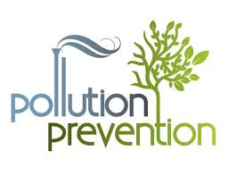

Pollution Prevention

There are some was to prevent pollution and safe our Earth. These are:
- Plant trees! They provide shade, clean air, mask noise and need much less water than lawns.
- Minimize the use of pesticides, herbicides, fertilizers. Do not dispose these chemicals, motor oil, or other automotive fluids into the sanitary sewer systems. Both of them end at the river.
- Industry and transport areas can be separated into zones, residential areas may be made at least 20 meters away from the main streets and the space be thicky planted.
- Heavy vehicles should not be allowed to use narrow streets and the use of horns and pressure horns be prohibited.
- Raising public awareness about the effect of noise pollution.